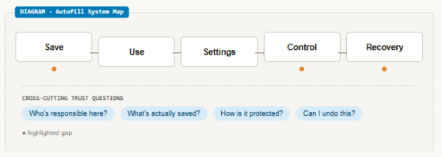
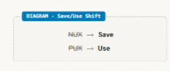
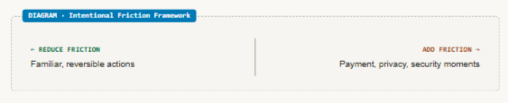

I shape strategy
Architecting an evaluation framework to drive product strategy
A comprehensive evaluation of Meta’s Autofill ecosystem that unified disconnected evidence, established shared principles, and turned complex product knowledge into strategic direction.
Featured artifact
Autofill system map

Impact snapshot
Autofill audit impact snapshot
My involvement
Building the evaluation model and translating evidence into direction
Role
Led content design with Product Design and UXR partnership to build the evaluation methodology and guide strategy.
Scope
Entry-point flows within Autofill’s broader Save/Use ecosystem; personally assessed two of the six competitor experiences reviewed: Snapchat and TikTok.
Contribution
Audited Autofill entry experiences across Meta’s ecosystem and competitors, introduced new evaluation models, and synthesized findings into strategic themes and recommendations.
The challenge
The team needed a shared way to understand an inherited product.
When our browser team inherited Meta’s revenue-driving Autofill product in H2 2025, growth had plateaued despite its high stakes as a complex, regulation-heavy global surface. Historical research, product decisions, and data were fragmented across multiple locations, so the cross-functional team lacked a unified end-to-end view of the ecosystem and its core friction points.
Autofill had evolved over several years through product expansion, experiments, research, and incremental improvements. Valuable knowledge existed across teams and artifacts, but it was organized around different questions, terminology, and moments in the experience — making it hard to see the product as one connected system or know which investments would produce the greatest value.
Product Design, UXR, and Content Design partnered on a comprehensive audit to establish a shared source of truth, align stakeholders, guide near-term optimization, and shape the longer-term roadmap.
The approach
I changed how the team described, evaluated, and prioritized the product.
01
I reframed the experience around what people were doing.
The team organized Autofill around internal lifecycle terms — NUX and PUX — that had grown imprecise. I shifted the model to Save and Use: language describing the actual experience rather than an internal classification.

02
I uncovered the principles behind trust.
I audited Meta’s entry experiences against competitor flows, examining why certain choices were made — particularly deliberate interruptions at sensitive moments. This led to intentional friction: the principle that payment, privacy, security, or other consequential moments may need to slow people down rather than remove every interruption.

03
I turned patterns into product direction.
I connected audits, competitive analysis, research, and performance evidence into five strategic themes and 15 recommendations spanning content, design, product behavior, and engineering priorities.
Audit, research, competitive and performance evidence→5 strategic themes→15 recommendations→Near-term and roadmap priorities
The audit converted distributed evidence into a traceable path from finding to investment decision.
Impact
The audit gave the team a common product model and a defensible basis for investment.
The strongest finding was clear: trust — not convenience — was the primary barrier to adoption. Reliable experiences increase perceived value; accurate information deepens trust; trust increases use.
The audit replaced screen-by-screen debate with common terminology, principles, and evidence. It informed approximately 85% of planned H1 2026 priorities, identified near-term improvements that supported the team’s H2 2025 revenue work, and became the primary input for defining roadmap priorities across Product, Engineering, Design, UXR, and Content Design.
It also established trust as the central product issue: research found that 67% of users cited security or privacy concerns as the leading adoption barrier — a finding that directly shaped the Autofill content optimization work.
Reflection
The most valuable outcome was not the audit document. It was a better way to see the product.
When a product problem is unclear, I create the structure teams need to understand the system, compare opportunities, and move forward together.
“I use content strategy to uncover the logic behind complex experiences — and give teams clearer ways to decide what to build.”